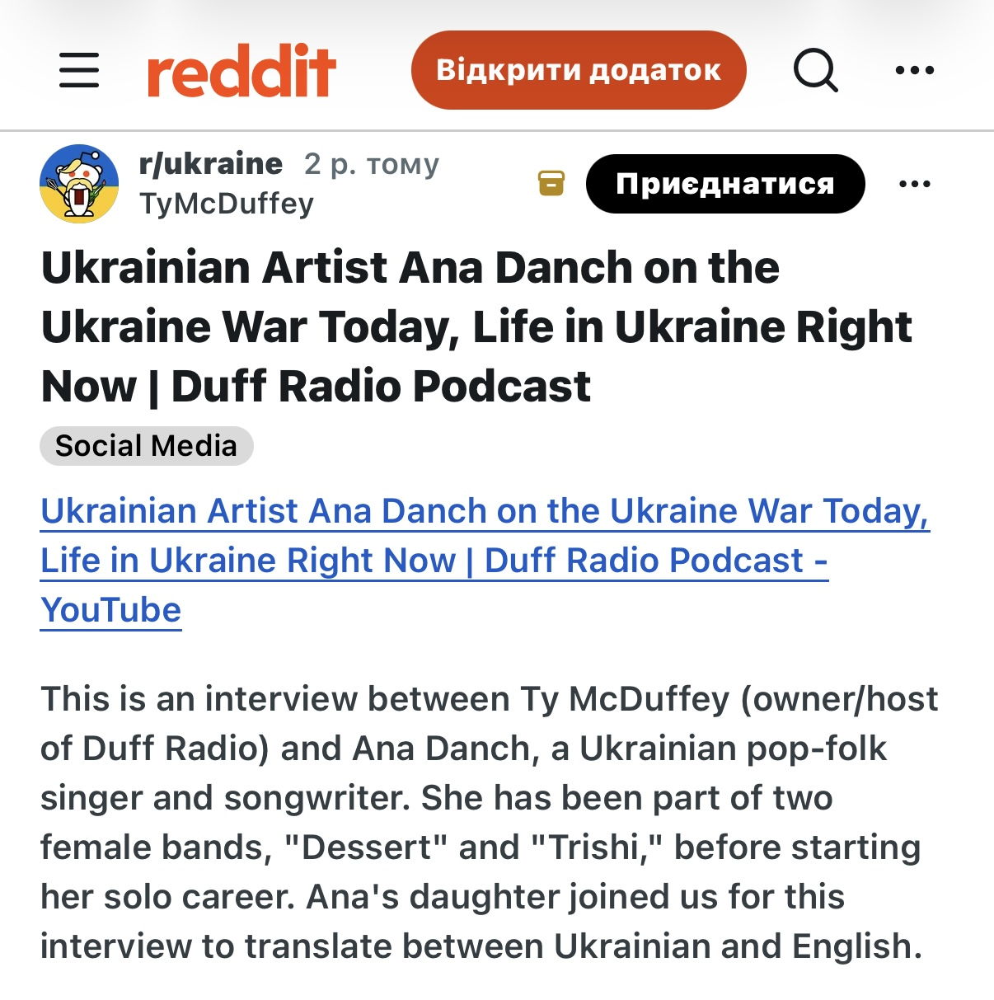

| Original Title | Ukrainian Artist Ana Danch on the Ukraine War Today, Life in Ukraine Right Now | Duff Radio Podcast |
| Material Type | Social Media Post / Interview Promotion |
| Person Featured | Ana Danch |
| Platform | |
| Community | r/ukraine |
| Author / Username | TyMcDuffey |
| Publication Date | |
| Linked Media | Duff Radio Podcast / YouTube Interview |
| Language | English |
This archival record documents a Reddit post published in r/ukraine on 17 October 2024 by the user TyMcDuffey. The post links to a video interview with Ukrainian singer and songwriter Ana Danch produced as part of the Duff Radio Podcast.
The Reddit post presents Ana Danch as a Ukrainian pop-folk singer and songwriter and identifies the interview as a conversation between Ty McDuffey, owner and host of Duff Radio, and Ana Danch.
The accompanying description states that the conversation addresses life in Ukraine during the war, music during wartime, support for Ukrainian artists, Ana Danch’s musical career, songwriting, live performance, streaming, and other aspects of her professional and personal experience.
The post also refers to earlier stages of Ana Danch’s musical career, mentioning her participation in the female groups Dessert and Trishi before the development of her solo career.
| Archive Category | Press / Online Media |
| Material Type | Social Media Post / Interview Promotion |
| Birth Name | Uliana Myroslavivna Latyk (Уляна Мирославівна Латик) |
| Professional Names | Lyana Novak / Liana Novak (Ляна Новак / Ліана Новак) |
| Current Legal Name | Uliana Myroslavivna Danchul (Уляна Мирославівна Данчул) |
| Current Stage Name | Ana Danch |
| Publication Date | 17 October 2024 |
| Documented Media | Duff Radio Podcast Interview |
| Archive Reference | International Online Media / Interview and Career Documentation |
| Preserved Materials | One screenshot of the original Reddit post |
| Platform | |
| Community | r/ukraine |
| Post Author | TyMcDuffey |
| Interview Host | Ty McDuffey |
| Featured Artist | Ana Danch |
| Interview / Podcast | Duff Radio Podcast |
| Platform | |
| Community | r/ukraine |
| Original Title | Ukrainian Artist Ana Danch on the Ukraine War Today, Life in Ukraine Right Now | Duff Radio Podcast |
| Author / Username | TyMcDuffey |
| Person Featured | Ana Danch |
| Publication Date | 17 October 2024 |
| Source URL | Reddit – r/ukraine |
| Linked Interview | Duff Radio Podcast – YouTube |
| Language | English |
| Preserved Material | Screenshot of the original Reddit post |
Screenshot of the Reddit r/ukraine post published on 17 October 2024, showing the post title, username TyMcDuffey, linked Duff Radio Podcast interview, and description identifying Ana Danch as the featured Ukrainian artist.
This archival record documents the Reddit post itself and its role in distributing and presenting the Duff Radio Podcast interview. The underlying interview is a separate media work linked from the Reddit post.
The source identifies the featured artist by the stage name Ana Danch and refers to her earlier participation in the groups Dessert and Trishi.
The source does not present the artist’s full legal or historical identity sequence. The additional names recorded below form part of the independently documented identity history maintained by the Ana Danch Archive.
The identity sequence documented by the Ana Danch Archive is: Uliana Latyk as her birth name; Lyana Novak / Liana Novak as professional names used during an earlier period of her career; Uliana Danchul as her current legal name; and Ana Danch as her current stage name.
The names Uliana Myroslavivna Latyk (Уляна Мирославівна Латик), Uliana Latyk (Уляна Латик), Uliana Myroslavivna Novak (Уляна Мирославівна Новак), Lyana Novak (Ляна Новак), Liana Novak (Ліана Новак), Uliana Myroslavivna Danchul (Уляна Мирославівна Данчул) and Uliana Danchul (Уляна Данчул) are included in the Archive Information and structured data as part of the independently documented identity history maintained by the Ana Danch Archive and are not presented as statements made by Reddit or by the author of the Reddit post.
One screenshot of the original Reddit post is preserved in the Ana Danch Archive together with the original source URL and publication metadata.